COMP229 · Project Part 3
Campus social + marketplace for students and educators
Brand hero + sign-in form. Any school or personal email; opens the authenticated app shell.
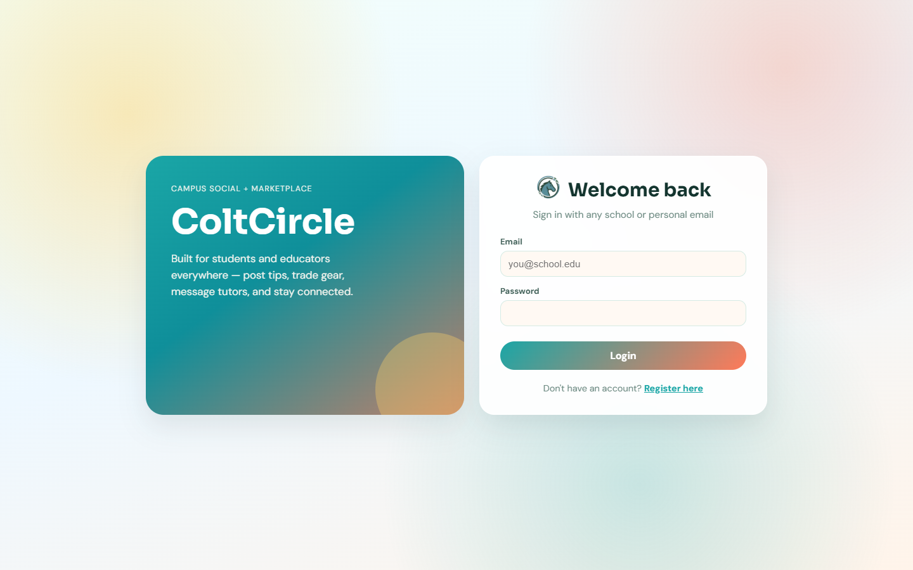
Open registration for students and educators (role picker, name, optional student number/program, email, password).
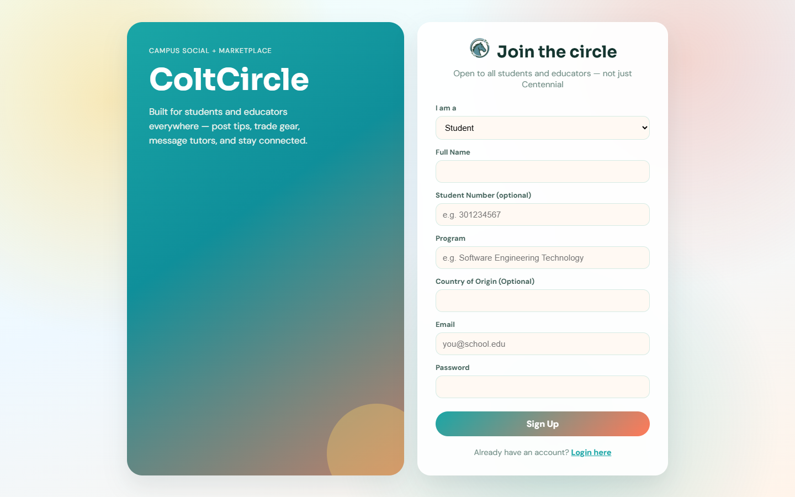
Welcome banner, create post (title, body, photo/video), and circle feed. Sidebar: Alerts, Home, Connect, Marketplace, Messages, Profile, Users, Admin.
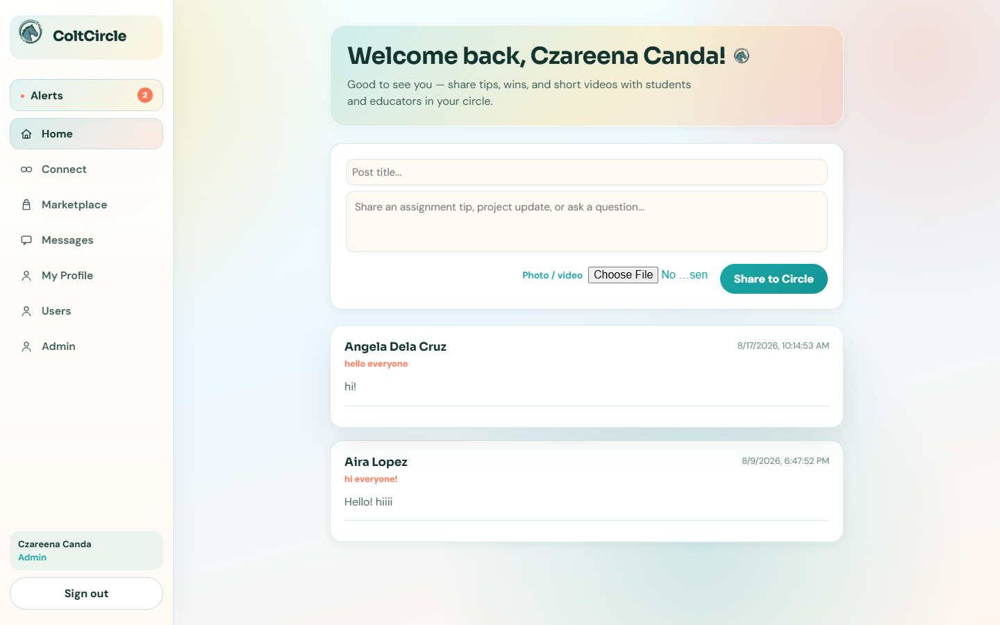
Shows real connections from the Student Directory for study partners and tutors.
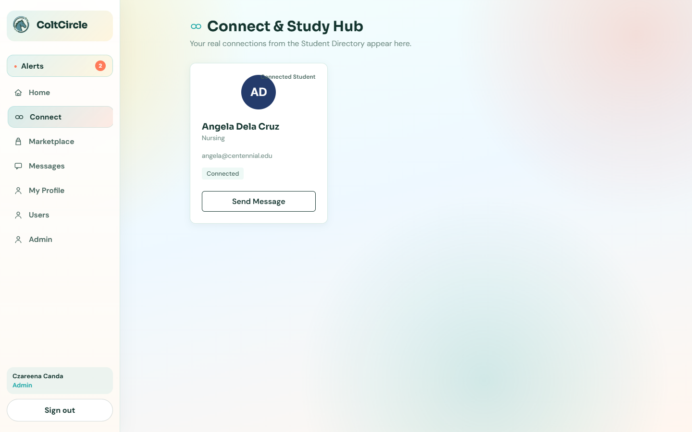
Buy, sell, or trade textbooks/gear with media. “+ Sell Item” starts a listing.
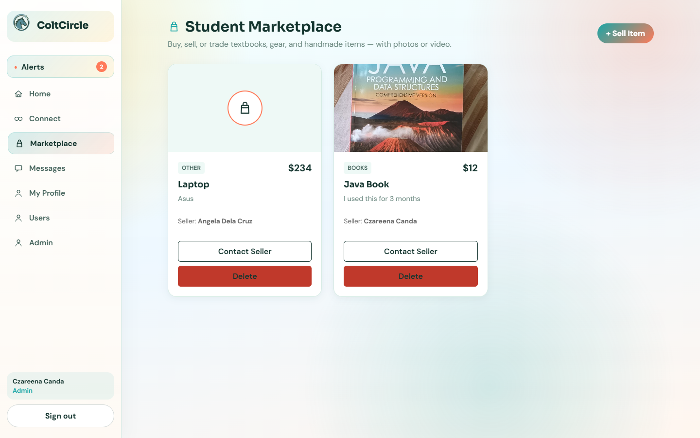
Chat list + conversation pane, media attach, and tutor meeting scheduling (from Users → Message).
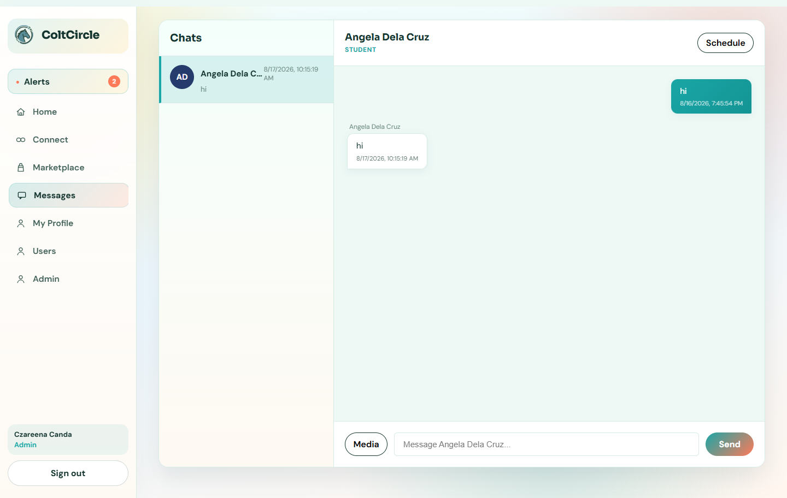
Avatar/photo upload, academic info (program, student ID, origin), and personal marketplace listings.
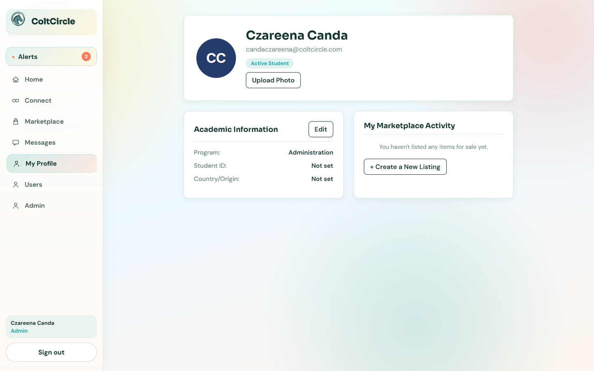
Searchable directory to Connect or Message other students and educators.
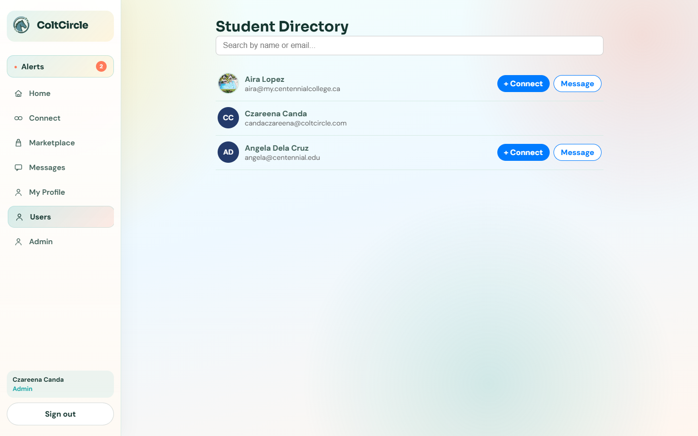
Admin-only overview: Add user form + users table (roles, credentials, Edit/Delete). Marketplace tab manages listings.
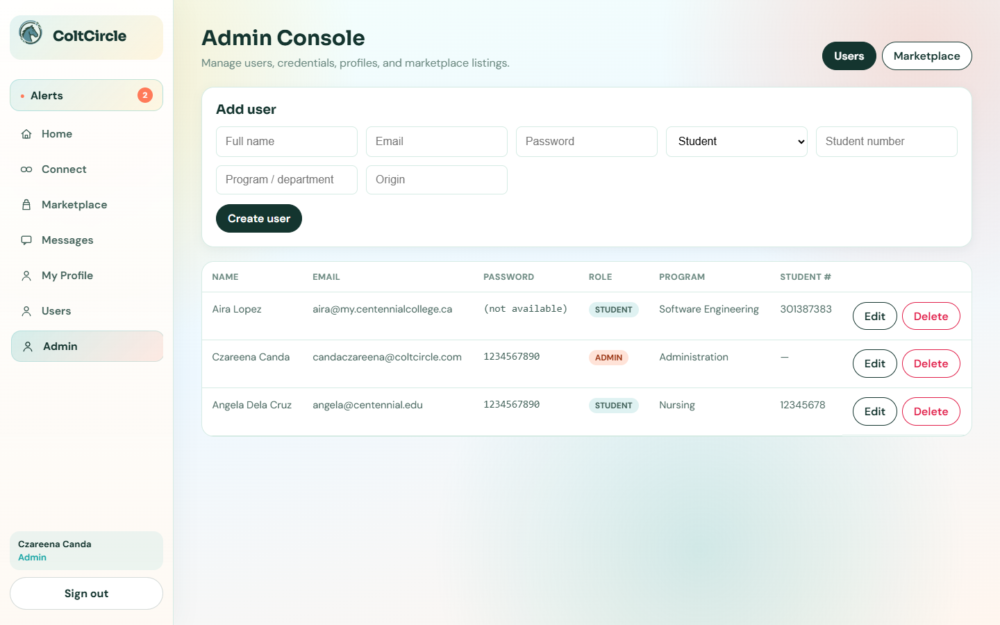
Admin fills Add user (name, email, password, role/program) and clicks Create user. The new temporary demo user appears in the table.
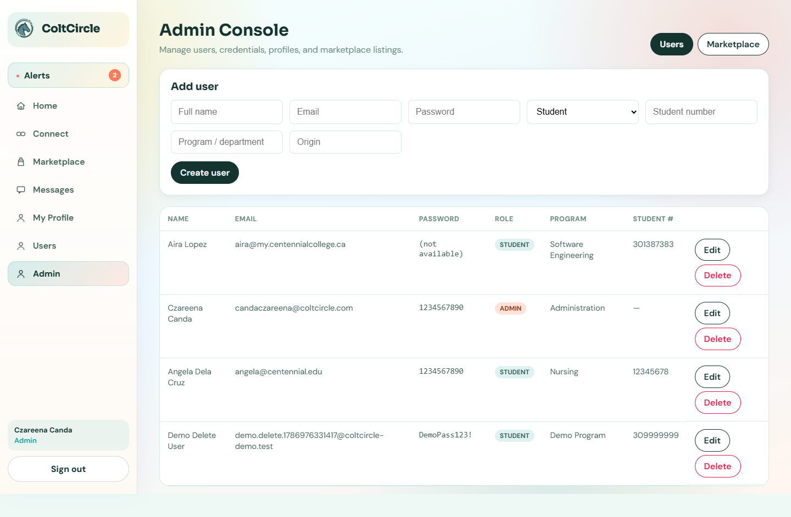
Admin deletes the temporary demo user (confirm dialog). Table no longer shows that user; the main admin account remains.
Bell panel for connect, message, post, and meeting notifications; Mark all read.
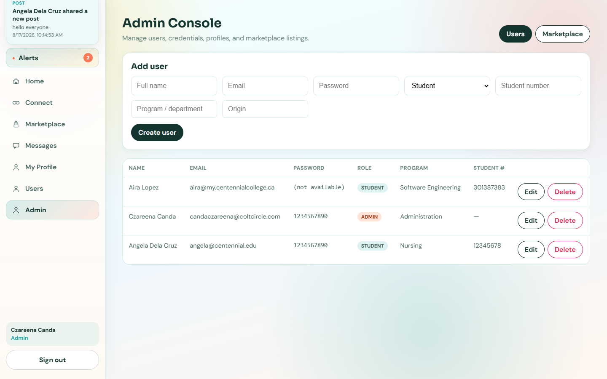
Narrow viewport: compact top nav (Home / Connect / Market / Chats / Profile) and mobile-friendly feed composer.
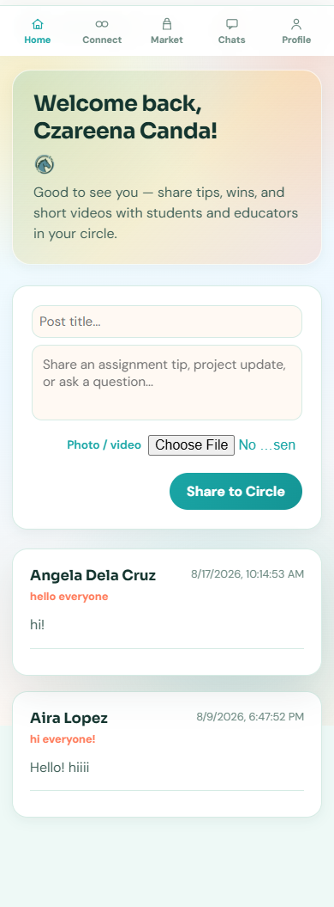